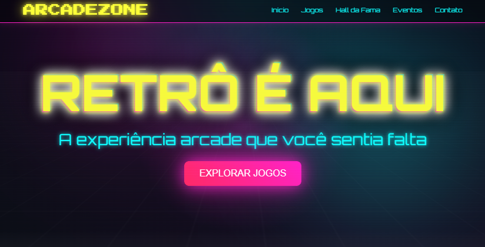
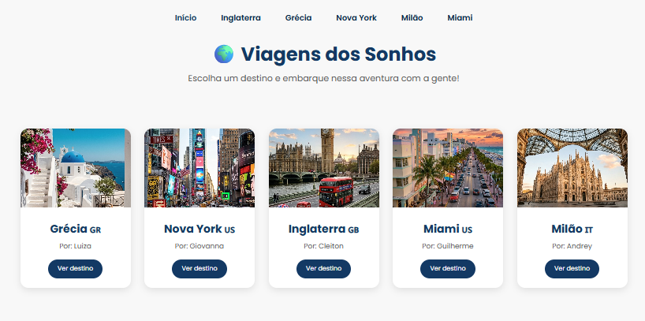
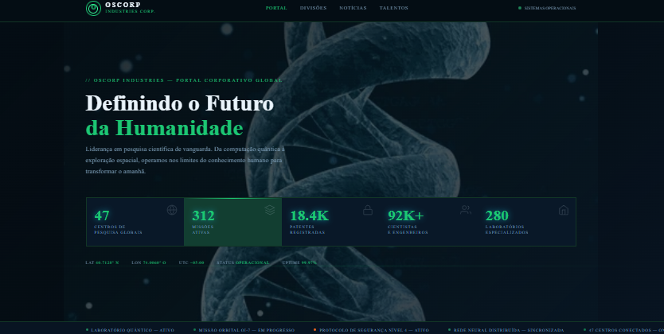

Hardware e Software
Conheci os componentes internos e externos do computador.
Olá! Meu nome é Cleiton, e neste site apresento minha evolução durante o curso Técnico em Desenvolvimento de Sistemas, mostrando os conteúdos estudados, os projetos desenvolvidos e os conhecimentos que adquiri ao longo do semestre.
Conheci os componentes internos e externos do computador.
Aprendi as funções do Windows e Linux.
Aprendi as metodologias ágeis e a organização de projetos, como Scrum e Kanban.
Primeiro contato com Scrum e organização de projetos.
Aprendi a utilizar o Figma para design de interfaces, de criar prototipos de alta e baixa fidelidade.
Criei minhas primeiras páginas web.
Aprendi versionamento e publicação de projetos via GitHub.
Fiz o curso de HTML Essentials, conseguindo mais experiência com desenvolvimento web.
Fiz trabalhos em equipe para desenvolver páginas web, aplicando branchs no GitHub.
Aprendi a utilizar Keyframes, Fonts, Variaveis, além de media queries.
Aplicação prática dos conhecimentos adquiridos nesta etapa.

Pagina que simula fliperama, onde voce pode jogar diversos jogos retrô.

Trabalho web colaborativo que apresenta destinos turísticos e dicas de viagem.

Página institucional da empresa Oscorp, com informações sobre os produtos e serviços (fictícios).
Escreva aqui sobre suas primeiras experiências ou a falta de contato prévio com a tecnologia antes de ingressar no ambiente técnico.
Compartilhe os desafios superados, a adaptação à lógica de programação e a rotina de estudos práticos em laboratório.
Explique sua autonomia atual na estruturação de layouts semânticos, estilizações avançadas e versionamento de código.
JavaScript, Banco de Dados e desenvolvimento focado em lógicas complexas de Back-end.